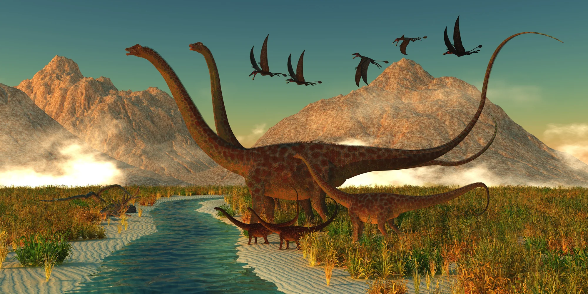
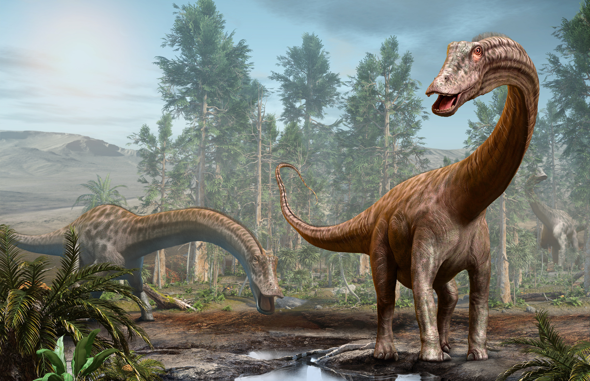
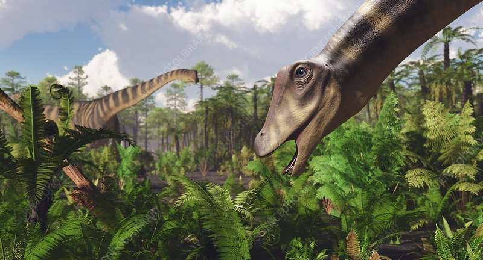
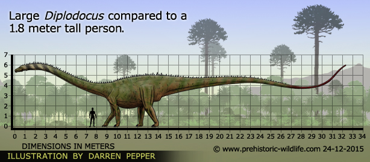
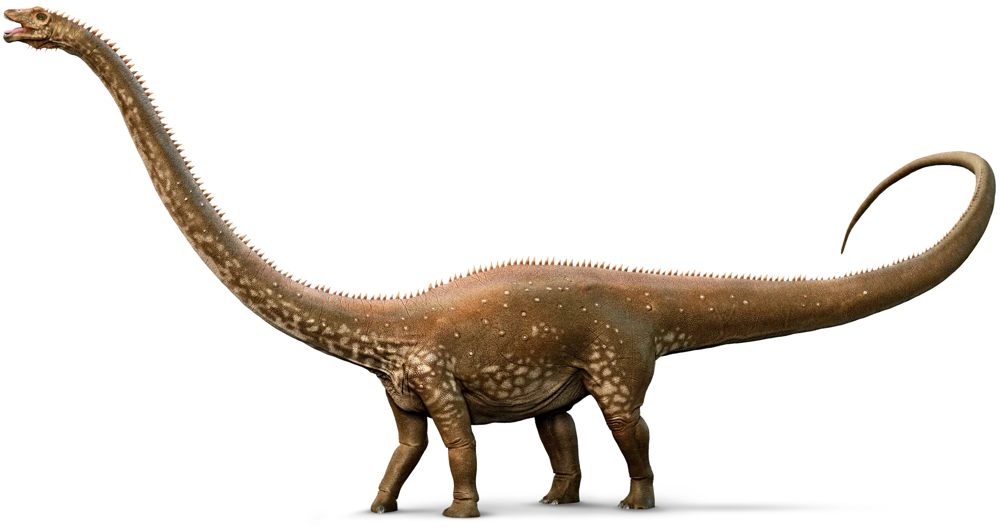
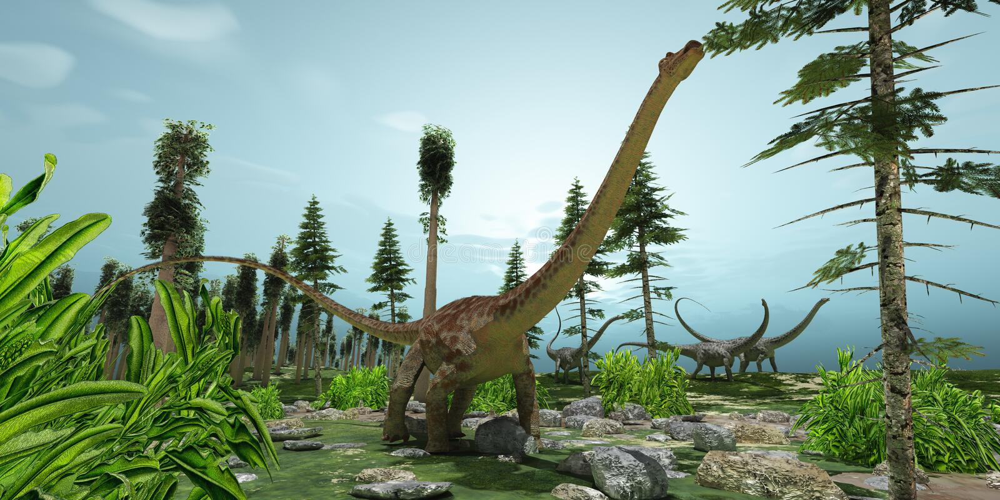
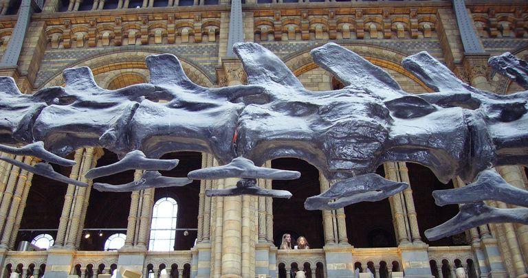
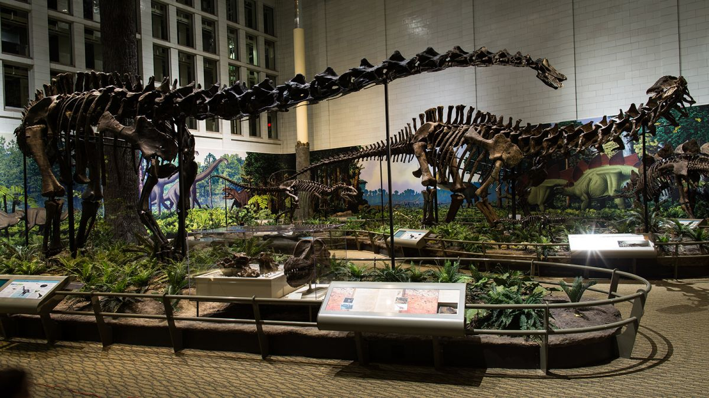
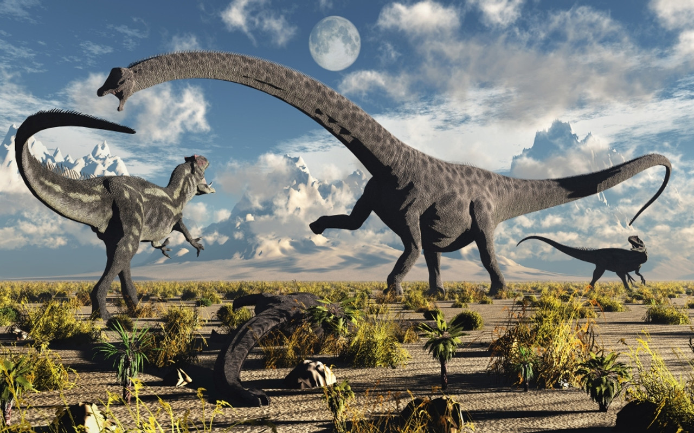

Diplodocus
Uyển Long Xà Kép kỷ Jura
Tổng quan
Kỷ
Jurassic
Họ
Diplodocidae
Chi
Diplodocus
Dài
35 m
Cao
5 m
Nặng
17 tấn
Thức ăn

Diplodocus là một chi khủng long thuộc nhánh Sauropoda và họ Diplodocidae, sống ở miền Tây Bắc Mỹ ngày nay vào cuối kỷ Jura.
Nguồn: wikipedia.org
Phân bố
Khu vực Bắc Mỹ
Thông tin thêm về Diplodocus
Kỷ nguyên
Những con vật khổng lồ này sống từ 152 đến 154 triệu năm trước trong thời kỳ được gọi là Thời đại Kimmeridgian, diễn ra vào cuối Kỷ Jura.
Phân bố
Diplodocus sinh sống ở Bắc Mỹ, hóa thạch của nó đã được tìm thấy ở các bang miền Tây Hoa Kỳ: Colorado, Utah, Montana và Wyoming. Các chuyên gia tin rằng chúng có khả năng sống ở đồng cỏ và ven rừng, một phần vì khu rừng rậm rạp sẽ khiến khủng long lớn khó di chuyển.
Tên khoa học
Được đặt tên bởi nhà cổ sinh vật học Othniel Charles Marsh vào năm 1878. Tên Diplodocus của chi này chỉ đến xương chevron hai xà của nó, bắt nguồn từ tiếng Hy Lạp cổ διπλος (diplos) có nghĩa "kép, gấp đôi" và δοκος (dokos) có nghĩa "xà". Các nhà khoa học mới đầu tưởng rằng chỉ Diplodocus có loạt xương chevron này, nhưng họ đã nhận thấy kiểu xương chevron ở những khủng long khác thuộc họ Diplodocidae về sau.
Kích thước
Diplodocus là một trong những loài khủng long lớn nhất, dài 25 - 35m, nặng từ 10 - 17 tấn, cao từ 4 - 5m, đây là loài động vật có tỉ lệ chiều dài đuôi so với cơ thể lớn nhất, một cá thể dài 30 m sẽ có đuôi dài 16 - 17m.
Ngoại hình
Diplodocus là chi điển hình và là nguồn gốc cho tên của họ Diplodocidae. Các chi trong họ này, mặc dù vẫn to lớn đồ sộ nhưng vẫn có cấu trúc mảnh khảnh hơn so với các loài Sauropoda khác, như các nhóm Titanosauroidea và Brachiosauridae. Tất cả đều có đặc điểm chung là những cái cổ và đuôi dài, nhưng khi di chuyển bằng 4 chân với tư thế nằm ngang thì chân trước ngắn hơn chân sau.
Chúng có gai sừng trên đuôi và lưng, tương tự như cự đà . Gai của chúng có thể dài tới 18 inch. Lớp vảy trên da của chúng có nhiều hình dạng vảy khác nhau bao gồm hình chữ nhật, hình đa giác, hình trứng, hình vòm, hình cầu và hình viên sỏi.
Chế độ ăn
Diplodocus là một loài động vật ăn thực vật. Chi khủng long này có một chiếc cổ dài mà nó có thể dùng để vươn tới những thảm thực vật cao và thấp, cũng như để uống nước, thậm chí chúng có thể đứng bằng 2 chân sau để kiếm ăn ở những cây cao.
Các nghiên cứu cho thấy rằng Diplodocus sẽ sử dụng hàm răng độc đáo của chúng để ăn lá trên cây, dương xỉ mềm và bụi rậm. Chúng sẽ không thể tước vỏ cây. Thay vì nhai thức ăn, chúng sẽ dành nhiều thời gian để tiêu hóa và lên men thức ăn trong dạ dày và ruột.
Khám phá
Một số loài Diplodocus đã được mô tả giữa năm 1878 và 1924. Đầu tiên bộ xương được tìm thấy tại thành phố Canon, Colorado, bởi Benjamin Mudge và Samuel Wendell Williston vào năm 1877. Năm 1878, nhà cổ sinh vật học Othniel Charles Marsh đặt tên cho nó là Diplodocus longus.
Mặc dù không phải D. Carnegii là loài hoàn toàn được biết đến và nổi tiếng nhất do số lượng lớn các bộ xương của nó trong các bảo tàng trên khắp thế giới. Các phần hóa thạch còn lại đã được tìm thấy trong hệ tầng Morrison ở các bang miền Tây Hoa Kỳ. Hóa thạch của chúng rất phổ biến nhưng ngoại trừ hộp sọ, chưa bao giờ tìm thấy bộ xương hoàn chỉnh của chúng.
Những sự thật thú vị
Theo nhiều nghiên cứu mới đây, có một sự thật được phát hiện ra là Diplodocus trưởng thành hoàn toàn không có kẻ thù trong tự nhiên. Với kích thước to lớn của nó, rất khó có khả năng một cá thể Diplodocus khỏe mạnh, đầy đủ, phát triển 25 tấn sẽ bị những kẻ săn mồi nhắm tới - ngay cả khi, Allosaurus hiện đại, đủ thông minh để săn lùng chúng. Thay vào đó, khủng long theropod của Jurassic Bắc Mỹ sẽ nhắm vào trứng và cá thể con của loài sauropod này (người ta tưởng tượng rằng rất ít cá thể con Diplodocus sống sót tới khi trưởng thành).

Cổ và đuôi của Diplodocus bao gồm gần 100 đốt sống. Chiều dài Diplodocus phần lớn phụ thuộc vào cổ và đuôi của nó, có cấu trúc hơi khác: cổ dài của loài khủng long này chỉ được bố trí trên 15 đốt đốt dài, trong khi đuôi của nó được tạo thành ngắn hơn 80 đốt xương (và có lẽ là linh hoạt hơn). Sự sắp xếp xương dày đặc này gợi ý rằng Diplodocus có thể đã sử dụng đuôi của nó không chỉ là sự đối trọng với trọng lượng cổ mà còn là vũ khí dẻo dai để tự vệ trước những kẻ săn mồi cùng thời.
